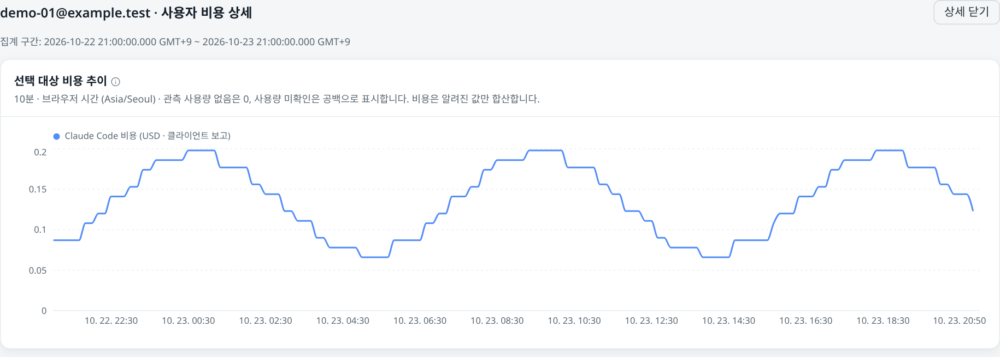
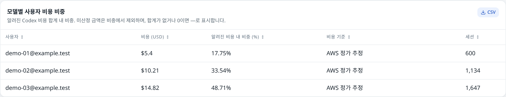

Cost drilldowns
User and model selections open filtered details. Model shares use the known cost subtotal and disclose missing prices.
Claude Code + Codex · Documentation
Explore Claude Code and Codex usage in one dashboard, then follow costs into a time window, user, model or recorded completion.
Updated October 24, 2026 · Describes source behavior; verify your installed revision.
48 seconds · Korean captions · instrumental music. Current application screens with synthetic identities and fictional costs; no production telemetry.
User and model selections open filtered details. Model shares use the known cost subtotal and disclose missing prices.
Cache and reasoning ratios, tokens per completion, and estimated cost per identified session have explicit denominators and coverage.
A macOS/Linux package configures both clients. Per-device tokens, revocation and a confirmed legacy macOS migration keep setup manageable.
Map signed OIDC groups to application roles. Enable a fixed login lifetime of up to 30 days when the identity provider supports the refresh contract.
| Measurement | Meaning |
|---|---|
| Claude reported spend | Use reported_cost for the Claude reported-cost path; retain computed-cost diagnostics separately. |
| AWS list-price estimate | Codex and non-Anthropic Claude pricing use supported AWS list rates, routing and request tiers. This is not a cloud invoice. |
| Known cost subtotal | Sum usable prices and label missing prices as partial. An all-unknown cost stays unavailable. |
| Observed tokens | Keep usable input/output pairs with partial disclosure. A positive subtotal does not prove complete canonical token components. |
| Activity indicators | Explore observed adoption, tools and activity. These are not validated employee-performance or causal productivity measurements. |
| Selected window | Cost and Trends controls |
|---|---|
| Up to 24 hours | 10 minutes, 30 minutes, hourly, daily or weekly. A one-day view starts at hourly resolution. |
| More than 24 hours | Hourly, daily or weekly. A two-day view does not offer ten-minute resolution. |
Read the returned interval and effective time bounds. Historical rollups and telemetry coverage can affect the visible period.


Client identifies the emitting application. Backend describes the observed or inferred provider path. Model identifies the model. A model name alone does not identify the coding client.
The Claude bedrock/enterprise comparison is an inferred session-channel view. It is separate from dashboard login and is not a Codex enterprise A/B comparison. One user can appear in multiple channels.
Analytics can answer additional questions through the guarded, read-only query path when enabled. Its availability depends on role, model access and deployment configuration.